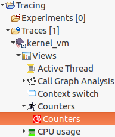
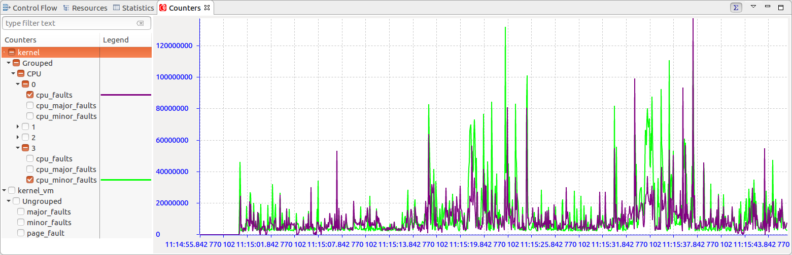
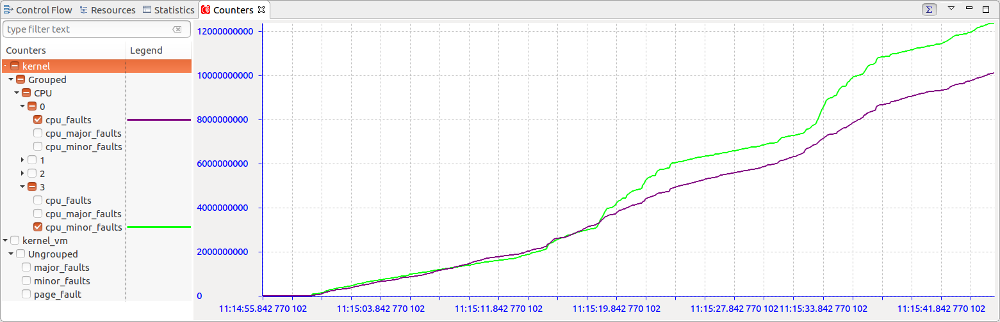
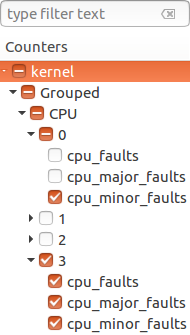
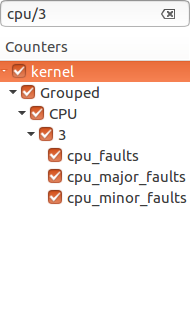
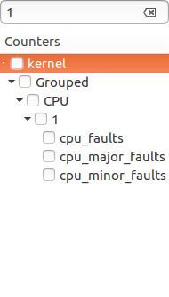
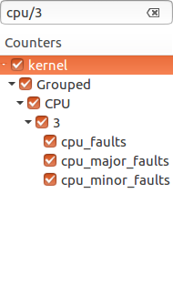
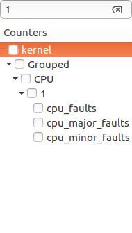

| Counters Analysis | ||
|---|---|---|
|
|
|
|
| Virtual Machine Analysis | Java Logging | |
The Counters View allows the user to inspect the values of hardware performance counters during the trace's lifetime. The counters store data concerning hardware-related activities such as page faults. The Counters View is currently available for LTTng UST and kernel traces. The Counters View supports experiments.
For the Counters View to display any data, the trace needs to collect information related to performance counters. There are two ways to configure a trace for this type of logging. On the command line, add a new context field to an LTTng channel using the lttng-add-context command (for more information, refer to the
LTTng documentation). On the LTTng Tracer Control, add a new context field using the ''Add Context..." window (see
Adding Contexts to Channels and Events of a Domain).
To open the view, double-click on the Counters tree element of the Project Explorer or type "Counters" in the Quick Access search bar.

The Counters View contains a filtered checkbox tree on the left-hand side and a chart on the right-hand side. The checkbox tree also contains a Legend column whose purpose is to display the styling of the entry in the chart. Thus, when checking a tree element, its data will appear in the chart and its styling will appear next to the element. An entry will conserve the same styling whether it is displayed on the chart or not.

The counters data can also be visualized cumulatively throughout time thanks to the tool bar button. By default the view is displayed differentially, with each data point's value being the counter value at that point's timestamp minus that of the previous point's timestamp.

The view's checkbox tree has enhanced functionalities. First, the checkboxes have three visual states. They are determined according to the visible elements of the tree.
- The entry is not checked.
- The entry is checked, but not all of its children.
- The entry and all of its children are checked.
Second, the checkbox tree has a search bar which allows users to apply filters on the tree elements. Multiple filters need to be separated with the "/" symbol. A match is detected when the subsequence of a tree element matches the pattern entered by the user. When checking an element of a filtered tree, the check state is only propagated to the visible elements. Below are different examples of filters being applied to the same tree:

 



Finally, the tree's checkboxes are remembered when switching from one trace to another.
|
|

|
|
| Virtual Machine Analysis | Java Logging |